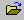
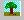
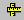
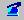
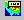
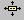

Quick Reference
What is CAX file?
CAX file is a native proprietary file format of VCollab. CAX files can be generated using VMoveCAE or VMoveCAD or VRML2CAX or CAX Writer API.
How to generate a CAX file from Native CAD/CAE softwares?
VMoveCAE, a product from VCollab, converts CAE result files from many native FEA and CFD codes into CAX files. Read VMoveCAE user guide to know more about the FEA/CFD codes that are supported.
Similarly, VMoveCAD, a product from VCollab, converts CAD models/geometries from many popular native CAD formats into CAX files. Refer to the VMoveCAD user guide to learn more about the native CAD formats that are supported.
How to Open a CAX file?
- Click File menu and choose the menu item Open or click  in the toolbar.
- An open file browser dialog is displayed.
- Select the file to be opened and click open button.
- The selected file will be loaded in the viewer window.
How to use Product Explorer?
- Product Explorer Window will be displayed in the left span of main window by default.
- If not, click the Edit menu and select menu item Product Explorer or click  in the toolbar
- This displays the product explorer window, which shows the list/hierarchy of parts of the model/simulation.
How to load CAE Results?
- Choose CAE menu.
- Select Result List. or click
 in the toolbar.
in the toolbar. - Select a result from popped up CAE result dialog box.
- Select an instance from 'Instance' drop down list, if needed.
- Select a derived type from 'Derived Type' drop down.
- Notice that selected CAE results are applied on the CAE model in the viewer.
How to activate CAE Animation?
 in toolbar.
in toolbar.How to set CAE Animation mode?
- Click CAE menu.
- Click Animation settings.
- Choose animation mode from the Animation type drop down list.
How to look at Standard Views?
- Click on the Display menu and select Standard Views option.
- The various sub options listed are Top View, Bottom View, Right View, Left View, Front View, Back View and Isometric Cabinet.
- Click a standard view and notice the change in the viewer.
How to create a Viewpoint Animation?
- Create View points using Edit | ViewPoints
- Create a path with these view points.
- Click right mouse button in view points panel.
- Click Animate Path in the drop down context menu.
How to Show/Hide parts?
- Select the Edit menu and choose the Product Explorer option.
- Uncheck the desired part in the product tree to hide.
- Alternately, one can double click on a part in the viewer window with left mouse button.
- That would select a part as well as open the Viewer->Context menu.
- Then select Hide option.
How to resize Product Explorer?
- By default, Product explorer is docked in the main Window.
- Double click on top layer to detach it from main window.
- User can resize now.
- Double click on top layer to dock into main window again.
How to change CAE legend colors?
- Click CAE menu and Click Legend/Hotspot
Settings or click
 in
toolbar.
in
toolbar. - Click 'Edit Legend' Tab.
- Select Number of colors in the drop down list under palette to change number of colors.
- Click a specific color in the palette to change individual color.
- Select a color or define a custom color in the popped up color picker dialog.
- Click 'Apply' to apply the changes in the viewer.
How to change CAE Result range?
- Click CAE menu and Click Legend/Hotspot
Settings or click in
toolbar.
- Click 'Update Legend' Tab.
- Click both the check boxes provided for Min and Max.
- Enter new range.
- Click 'Update Current Instance' to apply the change in current frame alone.
- Click 'Update All Instances' to apply the change to all frames.
How to find distance between two points in the model?
- Click Tools menu and click Measurement | 3DDistance option or click  in toolbar.
- Click a start point on model.
- Click an end point on the model.
- The distance value is displayed in the annotated label.
How to pick and move a part?
Select a part or group of parts
Click Tools menu and click Pick
Or
Click  in toolbar.
Drag with right mouse button to move the part.
Select Pick option again to drop the part
How to set exploded view?
- Click Tools menu and click Explode or click
 in toolbar.
in toolbar. - Click 'Explode' button in the popped up dialog to set exploded view.
- Click 'Animate' check box to enable animation while exploding model.
How to probe CAE Result?
- Click CAE menu and click Probe or click  in toolbar.
- Click on a node / element to probe the result.
- "Probe+Shift+Click" probes the whole transient result history as a table.
- "Probe+Ctrl+Click" on a node creates the XYplot label.
How to move labels?
Click Tools menu, click Labels/Notes and Select Move Labels
Or
click  in toolbar.
Click on a label and move the mouse pointer to the new position.
Click on the new position.
How to create movie files from set of external images?
- Click File menu and click Export.
- Select Make Movie option.
- Provide input folder path which contains all images.
- Provide output file path name.
- Change frame rate if necessary.
- Click Create.
- Movie is created and confirmed with a message "Successfully Captured".
How to get better performance in rendering? Or How to increase frame rate while interacting with model?
- Click Display menu and click Move Model As.
- Select any one performance option.
- Observe that frame rate is increased while interacting with model.
How to measure an arc or circle in the model?
- Click Tools menu.
- To measure an arc, click Measurement | 3Point Arc.
- Click start point of arc.
- Click any point on the curve between start and end of arc.
- Click end point of arc.
- An arc is drawn through these three points with center.
- Further an annotated label is display with arc information.
- To measure a circle, click Measurement | 3 Point Circle.
- Click any three points on circular curve.
- A circle is drawn with center and an annotated label with circle information is displayed.
How to view cross section of model?
- Click Tools menu and click Section option.
- Define a plane using the popped up section manager dialog.
- Click show planes to view the section plane.
- Use control sliders to translate and rotate the section planes.
- Click Section Plane Location button to know the plane intercepts with the coordinate axes.
- Please note that these cross sections are created for visualization purpose
How to merge more than one model into scene?
- Click File menu.
- Notice that 'Merge' option is disabled.
- Load a model using File | Open.
- Click File | Merge.
- Select a model to be merged.
- Click 'OK' to merge.
How to enable vector plot?
- Click CAE menu.
- Select Display | Vector Plot
- Click CAE | CAE Settings to change vector plot settings.
How to view CAE XYPlot?
- Click CAE menu.
- Select Display | XYPlot
- CAE settings dialog will be popped up with XYPlot tab.
- Click X axis radio
- Select an attribute in the data type combo.
- Click Y axis radio.
- Select a result in the data type combo.
- Select a derived part in the derived type combo.
- Ensure Probe option is enabled.
- Click on the node or element of interest.
- The curve will be plotted in the viewer.